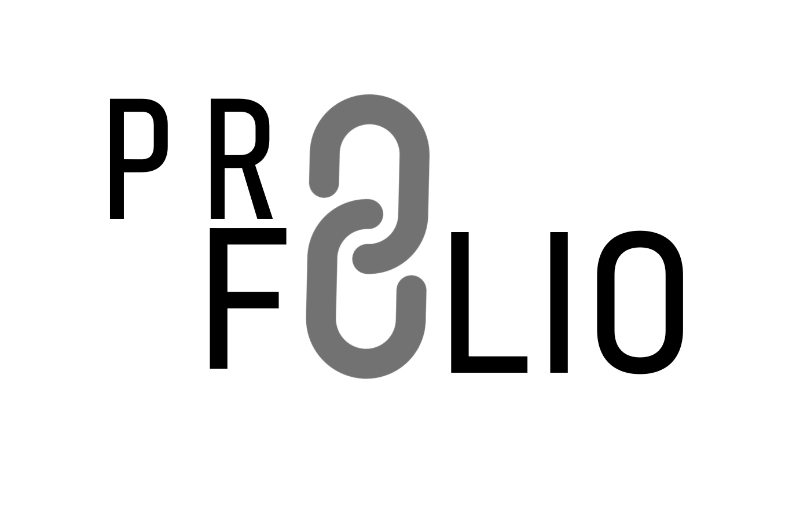

Devoir 2
Karine Simard, Mélaine Rousselin et Stéphanie Fitzgerald
____________________

Notre projet, Profolio, est un prototype web d’une application similaire aux réseaux sociaux professionnels tels que LinkedIn, Wizbii (France), Xing (Allemagne), etc. Profolio permettra d’avoir accès au portfolio des utilisateurs afin d’améliorer leur visibilité professionnelle. À la manière du fonctionnement de l’application de rencontre Tinder, l’internaute aura la possibilité de faire défiler des profils d’utilisateurs et de choisir le ou les candidats qui l’intéresse. L’icône graphique personnalisé, le nom et le champ d’expertise du candidat seront les premiers critères affichés. En sélectionnant un profil, l’internaute pourra accéder au portfolio de l’utilisateur, en ayant accès à une description de sa démarche et de ses ambitions, à un sommaire de son parcours professionnel, à une liste de ses compétences ainsi qu’à une revue de ses projets (antérieurs, en cours et/ou futurs). En outre, chaque utilisateur aura la possibilité d'insérer des liens vers ses pages professionnelles et personnelles, permettant alors aux internautes d'entrer en contact avec eux, d’où le concept de la chaîne de réseautage. Notre projet a pour objectif de nous permettre de laisser libre cours à notre créativité, tout en nous permettant d’explorer diverses techniques de codage. Cela sera également un moyen de faire une mise à niveau de notre portfolio avant l’application pour nos stages.